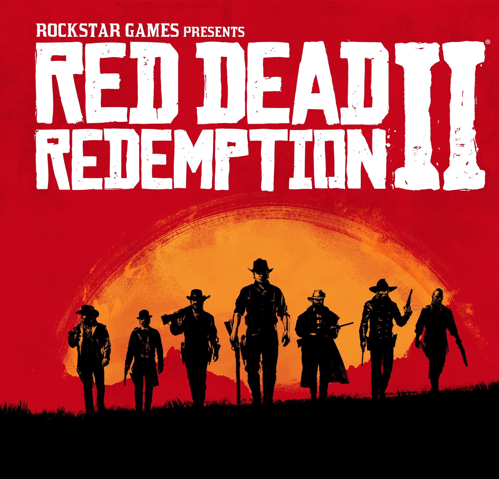

Open World Games
These games offer players a large, interconnected, and accessible environment where they can freely explore and engage with various activities, without significant restrictions on their actions or the order in which they complete tasks.